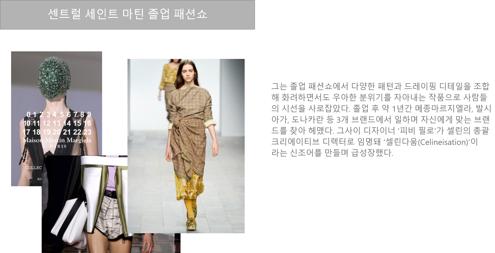
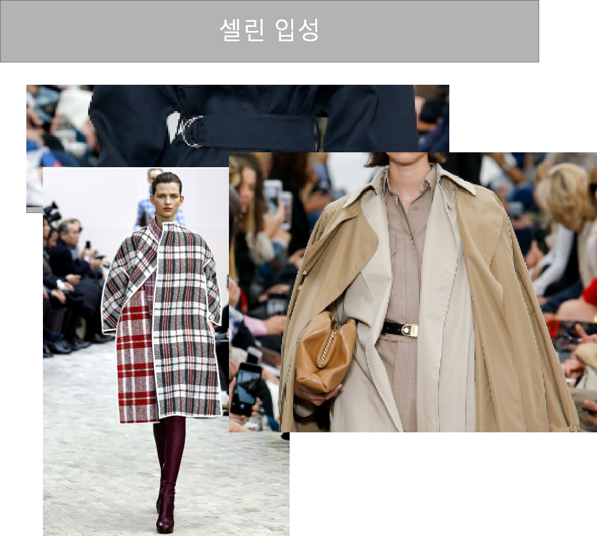

출생
Central Saint Martins
University of Arts London
University of Arts London
1986년 1월 22일 영국 브래드퍼드 출생
2011년 2월은 패션계가 잊지 못할 순간이다.
현시대가 가장 주목하는 디자이너, 다니엘 리(Daniel Lee)가
센트럴 세인트 마틴 졸업 패션쇼를 통해
처음으로 패션계에 이름을 알린 것.
2011년 2월은 패션계가 잊지 못할 순간이다.
현시대가 가장 주목하는 디자이너, 다니엘 리(Daniel Lee)가
센트럴 세인트 마틴 졸업 패션쇼를 통해
처음으로 패션계에 이름을 알린 것.
수상/ 경력



다니엘 리는 이러한 셀린의 변화를 눈여겨보다가
도나카란을 그만두고 2012년 셀린에 입성한다.
그리고 무려 6년을 피비 필로와 함께 일하며
레디투웨어 디렉터 자리까지 오른다.
그사이 셀린은 피비 필로의 미니멀리즘과
다니엘 리의 독창적이고 아방가르드한
디테일에 힘입어 패션계에 새로운 방향을
제시하는 브랜드로 자리매김했다.
2017년 그렇게 승승장구하던 다니엘 리와 셀린은
피비 필로가 브랜드를 떠나면서 이별하게 된다.
다니엘 리가 피비의 자리를 이어받는다는
이야기도 있었지만 그는 휴식을 취하기로 한다.
이후 다양한 브랜드에서 러브 콜이
끊이지 않았다.
도나카란을 그만두고 2012년 셀린에 입성한다.
그리고 무려 6년을 피비 필로와 함께 일하며
레디투웨어 디렉터 자리까지 오른다.
그사이 셀린은 피비 필로의 미니멀리즘과
다니엘 리의 독창적이고 아방가르드한
디테일에 힘입어 패션계에 새로운 방향을
제시하는 브랜드로 자리매김했다.
2017년 그렇게 승승장구하던 다니엘 리와 셀린은
피비 필로가 브랜드를 떠나면서 이별하게 된다.
다니엘 리가 피비의 자리를 이어받는다는
이야기도 있었지만 그는 휴식을 취하기로 한다.
이후 다양한 브랜드에서 러브 콜이
끊이지 않았다.